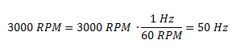

Una turbina de un metro de diámetro se pone en marcha en t=0 y a los 20 segundos alcanza una velocidad de 3000 RPM. Calcular la aceleración angular y la aceleración tangencial.
En primer lugar convertimos las revoluciones por minuto a revoluciones por segundo, es decir a hertz.
Luego calculamos la velocidad angular final.
Calculamos la aceleración angular en base a su definición, es decir como la variación de la velocidad angular sobre la variación de tiempo.
Como ya tenemos calculada la aceleración angular, podemos calcular la aceleración tangencial directamente:
Un móvil que se encuentra en MCU recorre una circunferencia de 100 metros de diámetro cada 30 segundos. En t=0 comienza a disminuir su velocidad hasta que se detiene completamente a los 15 segundos. Calcular la aceleración angular y tangencial.
Calculamos la velocidad angular inicial en base a su definición (variación de ángulo sobre variación de tiempo). Sabemos que recorre una circunferencia completa (2π radianes) en 30 segundos.
La velocidad angular final es cero ya que el móvil se detiene.
Calculamos la aceleración angular en base a su definición.
Como ya tenemos calculada la aceleración angular, podemos calcular directamente la aceleración tangencial multiplicándola por el radio y sin necesidad de plantear la definición.
Un móvil se desplaza con una trayectoria circular a una velocidad de 2 m/s.
¿Cuánto tardará en dar dos vueltas alrededor de una circunferencia de 100 metros de diámetro?
Podemos plantear el problema con las ecuaciones de velocidad tangencial (sabiendo que tiene que recorrer dos veces el perímetro) o de velocidad angular (sabiendo que tiene que recorrer dos veces el ángulo de la circunferencia completa, es decir 2π).
Dado que tenemos la velocidad tangencial vamos a plantear su ecuación y despejar el tiempo. Recordemos que la velocidad tangencial es la variación de posición respecto del tiempo.